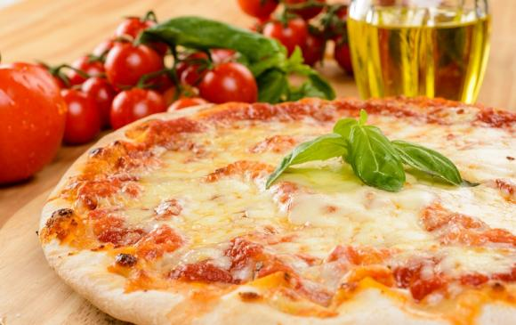

ATTENTION: It is a recipe quickly found on the internet to do the job and it has not been tested in the field + the translation of the various steps was done with google translator, as a Italian I do not recommend following this recipe. It will be updated later with a serious recipe as soon as I have tested more recipes myself.
Recipe: Pizza Margherita 